Аукцион товаров, впервые на Авито
Мы запускали с 0 новый формат покупки на Авито, где покупатели соревнуются за товар через ставки. Прежде чем приступить к разработке MLP, нам нужно было подтвердить потребность пользователей в новом формате покупки. Для этого мы провели серию тестов на фейкдорах
Я присоединилась к проекту
на этапе проверки потребности
среди продавцов
Готовы ли продавцы подключать аукцион во время размещения товара?
Одним из шагов размещения показывали предложение выбора аукциона — 11,5% продавцов были готовы подключить, спрос есть
Это ниже, чем мы предполагали (25%), но за счёт более низкого спроса у нас ниже шансы замусорить выдачу плохими аукционами
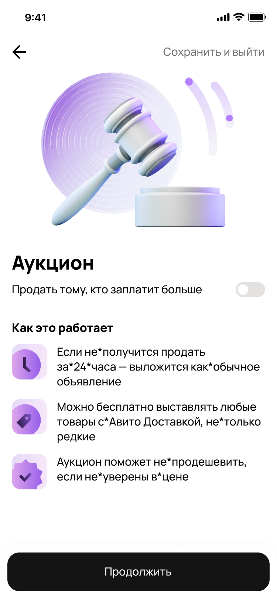
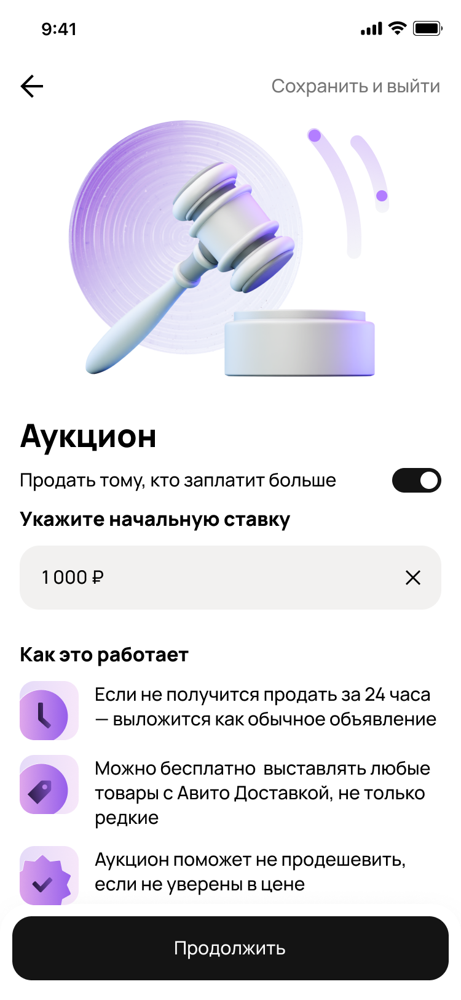
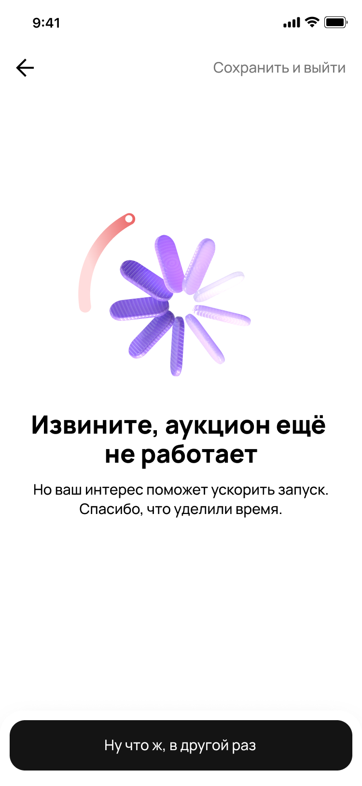
Будут ли продавцы подключать аукцион, когда уже есть спрос?
Если мы заметили, что товар популярный (контакт в первые 24 часа после размещения), мы предлагали продавцу включить аукцион
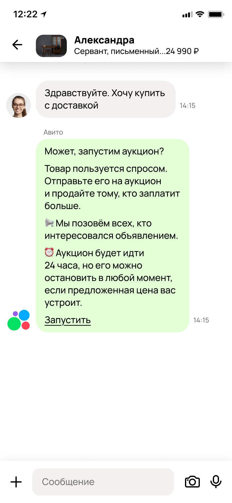
Одновременно с этим на его товаре появляется предложение продать дороже
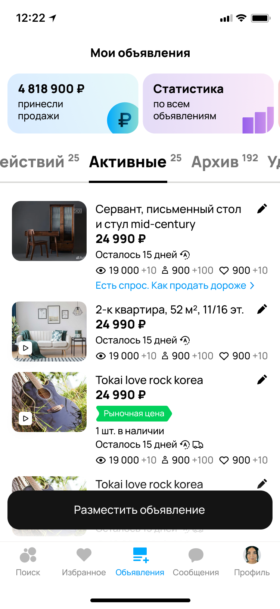
Подсвечиваем преимущества аукциона при подключении
В шторке настройки аукциона мы подставляем текущую стоимость товара, но даем возможность выбрать другую начальную цену.
В ходе эксперимента продавцы не меняли начальную цену
Из-за чего сделали вывод, что есть предполагаемый рост среднего чека за счёт того, что продавцы не меняют начальную цену +30,3%
750 сделок в сутки
Произошло по товарам, на которые продавцы были готовы подключить аукцион за время теста, это дало +25% к общему потенциалу
Доставка — обязательное условие аукциона, если доставка не была включена мы предлагаем подключить доставку
Возможен +0,1 paid items uplift за счёт включение доставки на товарах
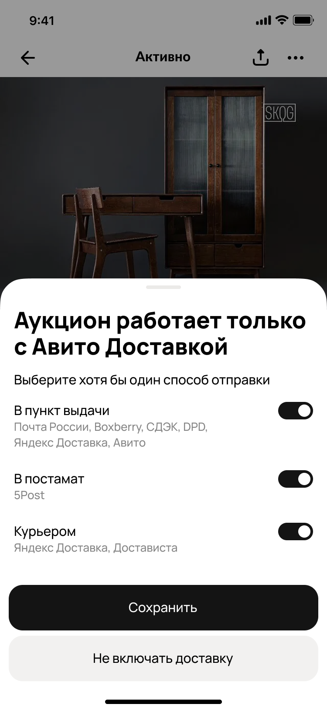
Если прошёл happy path и не отказался — показываем в конце, что это был фейкдор
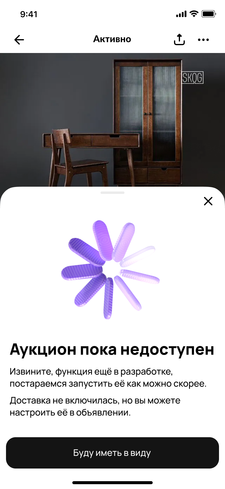
Мы подтвердили спрос среди продавцов и покупателей и приступили к проработке MLP
Подключение аукциона во время размещения товара
Если продавец разместил товар в аукционной категории, мы предложим ему аукцион как альтернативу обычной продаже
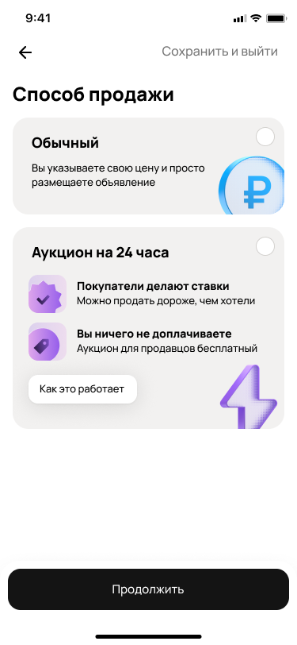
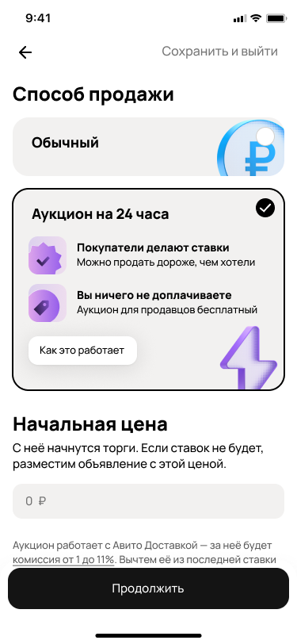
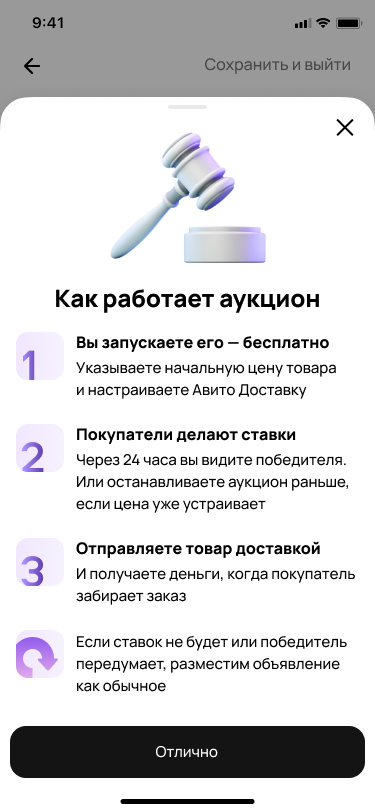
Если продавец не сразу решил продавать товар через аукцион, но у него ликвидный товар, мы предложим ему аукцион
Мы определяем товары, на которые будет высокий спрос и предлагаем подключить аукцион. Если товар не купят на аукционе — его можно продать как обычно
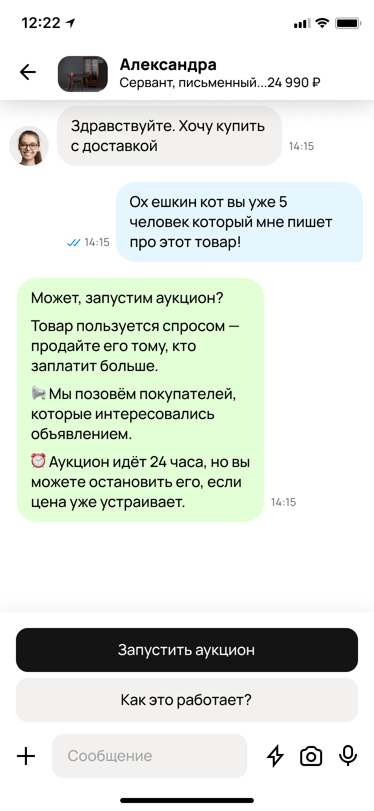
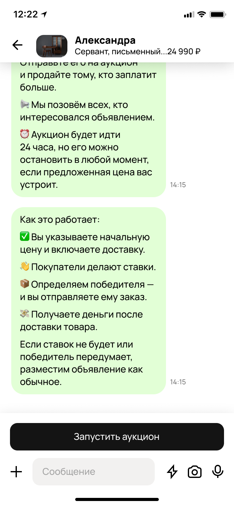
После начала аукциона продавец может его отслеживать
Есть ли сейчас ставки, сколько осталось времени, освежить в памяти условия размещения на аукционе, а также при желании продать прямо сейчас, если продавца устраивает текущая цена
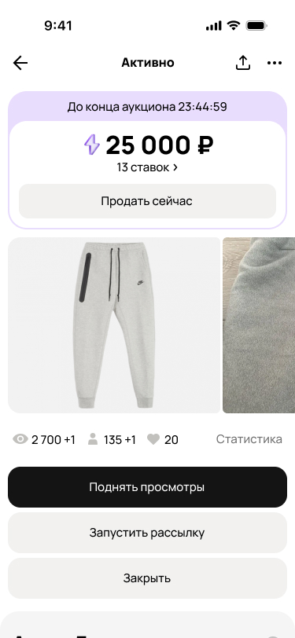
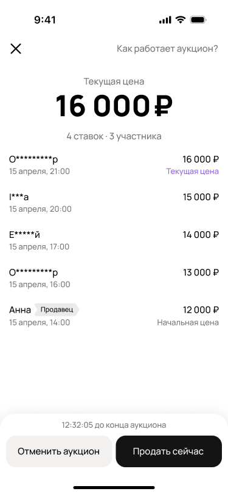
Полная система всех возможных статусов аукционного товара
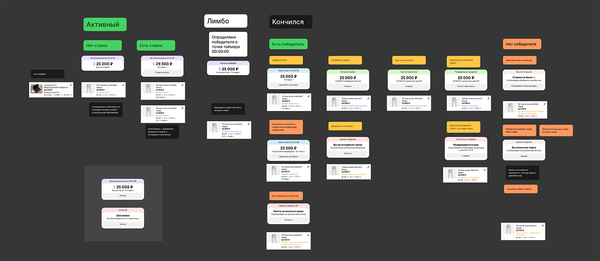
Когда аукцион закончился
У покупателя есть 12 часов чтобы оплатить и возможность отказаться. Если покупатель отказывается — мы предложим товар пользователю со следующей ставкой
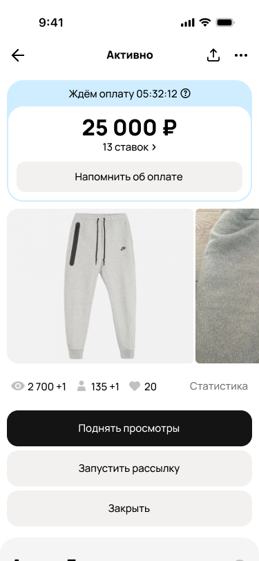
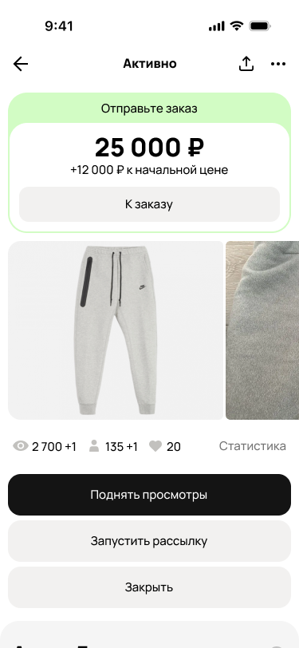
Запустили MVP в конце октября, ждём результатов, а пока о нас пишут
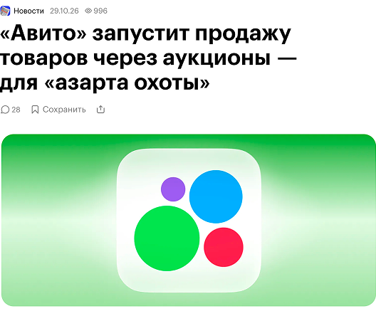
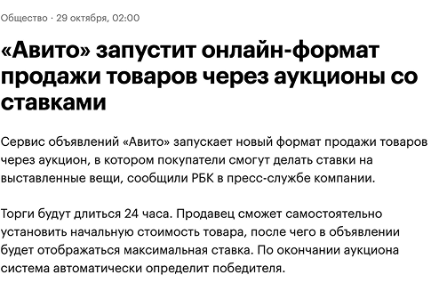
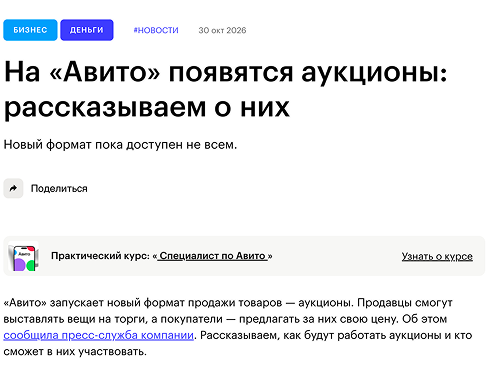